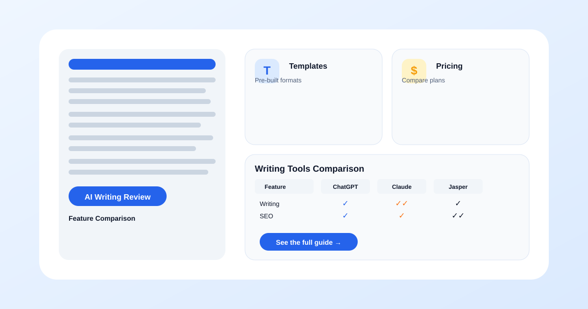

Notion AI vs ChatGPT: Which is Better for Note-Taking in 2026?
Notion AI and ChatGPT are both excellent AI-powered tools, but they approach note-taking from fundamentally different angles. ChatGPT is a general-purpose conversational AI that can help you brainstorm, summarize, and generate content in any context — but it has no built-in note storage or organization. Notion AI is an AI layer built on top of a full-featured note-taking and knowledge management platform, meaning the AI assistance is embedded directly into your existing notes and databases.
Comparing them directly is tricky because they solve overlapping problems in different ways. ChatGPT is better thought of as a thinking and writing partner that happens to help with notes. Notion AI is better thought of as a note-taking system where AI is a native feature of the environment. The right choice depends on whether your primary need is better note-taking infrastructure or better AI-powered writing and thinking support that you can apply to notes among many other tasks.

Key Takeaways
- Notion AI is better if your priority is organized, searchable, long-term note storage with AI-powered features embedded in your workflow (Rating: 8.5/10 for note-taking)
- ChatGPT is better if you want the most powerful AI assistance and are willing to manage your notes separately (Rating: 9/10 for AI assistance, 6/10 for note organization)
- Using both together is the optimal setup for power users: ChatGPT for brainstorming and drafting, Notion AI for organizing and managing your knowledge base
- Notion AI costs $10/month as an add-on to Notion (which has a free plan). ChatGPT costs $0 or $20/month.
The Big-Picture Difference
Understanding the fundamental architectural difference between Notion AI and ChatGPT is essential before comparing specific features. ChatGPT is a standalone AI model accessed through a chat interface. It has no memory of past conversations beyond the current session context window, no built-in note storage, and no organizational structure. You can use it to generate content that you then manually organize elsewhere, but the AI itself does not help you manage or retrieve notes over time.
Notion AI, by contrast, is an AI assistant that lives inside a full knowledge management platform. Your notes, databases, wikis, and project boards are stored persistently in Notion's cloud. The AI can read, write, summarize, and answer questions about all of this stored content. When you ask Notion AI a question, it searches your existing notes and databases to provide contextually relevant answers. This means Notion AI gets more useful over time as you accumulate more content in your workspace.
This distinction drives every other difference between the two tools. ChatGPT is a more powerful and flexible AI model. Notion AI is a more powerful note-taking ecosystem with good AI embedded in it. Which one is better for you depends on whether you need better AI or better notes.
Quick Comparison Table
A side-by-side look at how Notion AI and ChatGPT compare across the dimensions that matter for note-taking.
| Tool | Starting Price | Best For | Free Tier | Rating |
|---|---|---|---|---|
| Notion AI | $10 / month (add-on) | Organized note-taking with embedded AI | Notion free plan (AI is paid add-on) | 8.5 / 10 |
| ChatGPT | Free / $20 / month | Powerful AI writing and brainstorming | Free GPT-4o mini access | 9.0 / 10 |
Writing Assistance
Writing assistance is where the two tools diverge most clearly in capability and approach.
Notion AI Writing Features
Notion AI provides writing assistance that is deeply contextual. When you are editing a page in Notion, you can ask the AI to rewrite a paragraph, expand on an idea, summarize a section, fix spelling and grammar, translate content, or generate a table from a description. The AI understands the structure of your page — headings, bullet lists, database entries — and can work within that structure. It can also generate action items from meeting notes, create summaries of long pages, and suggest edits to improve clarity.
The key advantage of Notion AI's approach is that the writing assistance happens in place. You do not need to copy text from your notes into a separate chat interface, ask for changes, and then paste the result back. You highlight the text you want to modify, select the AI action you want, and the result appears directly in your document. This reduces friction significantly for the specific use case of editing and refining your notes.
However, Notion AI's writing model is not as capable as GPT-4o. For complex writing tasks — drafting a full essay from scratch, generating nuanced analytical content, or handling sophisticated creative writing — ChatGPT produces better results. Notion AI is optimized for the kinds of writing that happen inside a note-taking workflow: summaries, bullet-point refinements, and short-form expansions. It is less suited for long-form generation or highly creative writing.
ChatGPT Writing Features
ChatGPT offers more powerful and flexible writing capabilities overall. It can generate long-form essays, brainstorm creative ideas, produce multiple variants of a paragraph, adapt tone and style to specific audiences, and handle complex multi-step writing instructions. The free tier using GPT-4o mini is already quite capable, and the Plus tier ($20/month) with full GPT-4o access is substantially better for sophisticated writing tasks.
The main downside of ChatGPT for note-taking is the separation between writing and storage. You generate content in ChatGPT, then need to manually copy, paste, and organize it into your note-taking system. This creates friction, especially for iterative writing workflows where you go back and forth between drafting in ChatGPT and editing in your notes. Users who do a lot of AI-assisted writing often end up with a hybrid workflow: brainstorm and draft in ChatGPT, then refine and organize in Notion.
Winner: ChatGPT for raw writing power, Notion AI for integrated editing
If writing quality and flexibility are your top priorities, ChatGPT is the clear winner. If you value the convenience of editing notes directly without switching contexts, Notion AI's integrated approach is more efficient. Most power users end up using both: ChatGPT for heavy drafting and Notion AI for in-place refinement.
Note Organization
This category is not close. Notion was a world-class note-taking platform before AI was added, and the AI layer enhances an already excellent organizational system. ChatGPT has no organizational capabilities whatsoever beyond the chat thread list.
Notion AI Organization
Notion's organizational model is built on pages, databases, and relationships. You can create nested pages for hierarchical organization, use databases with custom properties (tags, dates, statuses, formulas) for structured content, and create linked databases that show the same content in multiple contexts. The AI features enhance this by automatically generating summaries of long pages, suggesting tags and properties based on content, and allowing you to ask natural-language questions that search across your entire workspace.
The Q&A feature is particularly valuable for organization. Instead of manually browsing through folders and pages to find a specific note, you can ask "What were the key points from the marketing strategy meeting last Tuesday?" and Notion AI will search your notes, identify the relevant page, and synthesize an answer. This capability requires that your notes are already in Notion (the AI can only search what you have stored there), but if they are, it transforms retrieval from a manual browse operation into an instant lookup.
Notion also supports templates, which let you create consistent note structures for recurring meeting types, project notes, class lectures, book summaries, and more. The AI can help you create and populate these templates, making it faster to start a new note with the right structure.
ChatGPT Organization
ChatGPT's organizational features are minimal. Conversations are saved as threads in a sidebar list. You can search through past conversations, rename them for easier identification, and organize them into folders (a feature added in 2026). But there is no database structure, no cross-referencing between threads, no custom properties, and no way to create relationships between pieces of information.
ChatGPT is not designed to be a knowledge management system. It is a conversation interface. If your primary need is organized, retrievable, long-term note storage, ChatGPT is the wrong tool. You would need to pair it with a separate note-taking app, which adds workflow complexity.
Winner: Notion AI, by a wide margin
Notion AI is built from the ground up for note organization. ChatGPT is built for conversation. If organized note-taking is your primary goal, Notion AI is the better choice without qualification.
Research Synthesis
Research synthesis involves combining information from multiple sources into coherent summaries, analyses, or outlines. Both tools can help, but in different ways.
Notion AI for Research
Notion AI excels at synthesizing information that is already in your workspace. If you have stored research notes, articles, interview transcripts, and data in Notion, the AI can pull from all of these sources to generate summaries, identify themes, and create outlines. The context-awareness of Notion AI means its syntheses are grounded in your actual research materials rather than in the model's training data.
This is particularly valuable for long-term research projects where materials accumulate over weeks or months. As your research database grows, Notion AI's Q&A and summarization features become more powerful because they have more content to draw from. You can ask "What are the three main criticisms of this theory across the sources I have collected?" and receive a synthesized answer based on your stored research notes.
ChatGPT for Research
ChatGPT's research synthesis relies on its training data and the context you provide in the conversation. If you paste articles, quotes, or notes into the chat, ChatGPT can synthesize them effectively — often more creatively and comprehensively than Notion AI. The Plus tier with web browsing can also search the internet for additional context.
The limitation is that ChatGPT has no persistent memory of your research materials. Each synthesis task starts fresh, and you need to re-provide context for every session. For one-off research tasks, this is fine. For ongoing research projects where you want the AI to build an understanding of your materials over time, Notion AI's persistent workspace is more suitable.
Winner: Notion AI for long-term projects, ChatGPT for one-off tasks
Notion AI's persistent knowledge base makes it superior for ongoing research where materials accumulate over time. ChatGPT is better for quick, one-time synthesis tasks where you do not need to build on previous work.
Knowledge Management
Knowledge management is the long-term practice of storing, organizing, retrieving, and building upon information. It is distinct from note-taking in that it implies a persistent, structured body of knowledge that grows in value over time.
Notion AI for Knowledge Management
Notion AI is an excellent knowledge management platform because it combines persistent storage, flexible organization, and AI-powered retrieval. You can build a personal wiki with pages for every topic you study, link related concepts through page references and backlinks, and maintain a growing body of knowledge that the AI can search and synthesize.
The database feature is particularly powerful for knowledge management. You can create a database of books you have read (with properties for author, rating, key takeaways, and status), a database of research papers (with links to summaries and notes), and a database of project notes — all interconnected. Notion AI's Q&A can search across all of these databases to answer questions that span multiple domains of knowledge.
Over months and years, a well-maintained Notion workspace becomes a personal knowledge base that grows more valuable over time. The AI layer makes this accumulated knowledge more accessible, but the foundation is the organizational structure you build.
ChatGPT for Knowledge Management
ChatGPT is not a knowledge management tool. It has no persistent storage, no organizational structure, and no way to build a long-term knowledge base. Each conversation is a fresh start. While ChatGPT can generate excellent content and provide powerful AI assistance, it does not help you build a system for preserving and organizing that content over time.
Some users work around this by maintaining a separate document or note system where they paste useful ChatGPT outputs, but this adds workflow overhead. ChatGPT itself cannot help you organize, tag, link, or retrieve past outputs in a structured way.
Winner: Notion AI, decisively
For anyone who wants to build a long-term personal knowledge base, Notion AI is the superior choice. ChatGPT is not designed for this use case and should be paired with a separate knowledge management tool if long-term organization matters.
| Feature | Notion AI | ChatGPT |
|---|---|---|
| Free Tier | ~ Free plan (limited) | ✓ GPT-4o-mini |
| Individual Plan | $10/member/month (add-on) | $20/month (Plus) |
| Team Plan | $18/member/month | $25/user/month |
| Best For | Note-taking within Notion | General AI assistant |
Pricing and Value
The pricing structures of Notion AI and ChatGPT are different enough that the right choice depends on your budget and existing subscriptions.
Notion AI Pricing
- Notion Free: $0. Includes unlimited pages and blocks, basic collaboration, 7-day page history.
- Notion Plus: $4 per month (billed annually). Adds unlimited file uploads, 30-day page history, and advanced permissions.
- Notion AI Add-on: $10 per member per month (adds to any plan). Includes AI writing, summarization, Q&A, and study guide generation.
- Notion Business: $15 per user per month (billed annually). Adds team spaces, advanced analytics, and more granular admin controls.
The typical student or individual user pays $10/month for the AI add-on on top of the free Notion plan. If you also want the Plus features, that is $14/month total. For teams, costs scale per user.
ChatGPT Pricing
- Free: $0. Access to GPT-4o mini with rate limits. Sufficient for light to moderate daily use.
- ChatGPT Plus: $20 per month. Full GPT-4o access, higher usage limits, file uploads, web browsing, DALL-E image generation.
- ChatGPT Team: $25 per user per month. Shared workspaces, higher limits, data privacy for team use.
ChatGPT's free tier is genuinely useful, and many users never need to upgrade. The Plus tier at $20/month is more expensive than Notion AI's add-on but provides a more capable AI model.
Value Comparison
Notion AI is better value if you need organized note storage and are willing to accept a less powerful AI model that is deeply integrated into your workspace. ChatGPT is better value if AI capability is your priority and you do not mind managing notes in a separate system.
For students and professionals who want both, the combined cost of Notion AI ($10/month) and ChatGPT Free ($0) or ChatGPT Plus ($20/month) covers the full spectrum. The sweet spot for value is Notion AI + ChatGPT Free, which gives you organized note-taking with embedded AI plus access to a powerful general-purpose AI assistant at no additional cost.
Which Should You Choose?
Choose Notion AI if:
- Your primary need is better organized note-taking with AI as a supporting feature
- You want to build a long-term personal knowledge base that grows in value over time
- You value in-place AI assistance that works within your existing document structure
- You regularly need to search and synthesize information across many notes
- You are already using Notion or willing to invest time in learning it
Choose ChatGPT if:
- AI writing quality and flexibility are your top priorities
- You already have a note-taking system you like and only need AI assistance
- Your note-taking needs are simple and do not require a complex organizational system
- You value having the most capable AI model available
- You prefer a simple, familiar chat interface with minimal learning curve
Use both if:
- You want best-in-class AI assistance AND organized long-term note storage
- You are willing to manage a two-tool workflow (ChatGPT for drafting, Notion AI for organizing)
- Your budget allows for Notion AI ($10/month) and possibly ChatGPT Plus ($20/month)
Frequently Asked Questions
Can I use Notion AI and ChatGPT together?
Yes, and this is actually the optimal setup for power users. ChatGPT serves as your primary AI assistant for brainstorming, drafting, complex writing tasks, and general problem-solving. Notion AI serves as your note-taking and knowledge management platform with embedded AI for editing, summarizing, and retrieving your stored notes. The workflow is straightforward: use ChatGPT for heavy AI work, then paste the results into Notion for organization. Use Notion AI for quick edits, summaries, and questions about your existing notes. Many users find that this combination covers all their needs better than either tool alone.
Which is better for team note-taking and collaboration?
Notion AI is significantly better for team collaboration. It supports shared workspaces, real-time collaborative editing, page comments, threaded discussions, and granular permissions. Team members can work on the same notes simultaneously, assign action items, and share databases. The AI features work across the shared workspace, so team members can ask questions about collective notes and receive synthesized answers. ChatGPT's team features are more limited — shared chat threads and workspaces exist but lack the structured organization, database capabilities, and page-level collaboration that Notion provides. For any team that needs to share, organize, and build upon notes together, Notion AI is the clear choice.
Do Notion AI and ChatGPT work offline?
Notion has limited offline support. You can view and edit recently accessed pages without an internet connection, and changes sync when you reconnect. However, the AI features require an active connection. Notion AI's writing assistance, Q&A, and summarization features will not work offline. ChatGPT has no offline mode at all — you need an active internet connection to access the chat interface. If offline access is a critical requirement for your note-taking, neither tool is ideal. Consider a dedicated offline note-taking app like Obsidian or Apple Notes, which can be paired with ChatGPT for AI assistance when you do have connectivity.
Does Notion AI support templates for note-taking?
Yes, templates are one of Notion's strongest features. The platform includes a template gallery with hundreds of pre-built templates for meeting notes, project management, class notes, book summaries, journaling, and more. You can create your own templates with custom structures, properties, and pre-filled content. Notion AI enhances templates by helping you populate them — for example, you can apply a meeting notes template and then use AI to generate the agenda, action items, or summary based on a brief description. ChatGPT has no template system, though you can create prompt templates by saving effective prompts and reusing them across conversations.
Which tool is better for students who need to organize lecture notes?
Notion AI is generally the better choice for students who need to organize lecture notes across multiple courses. You can create a separate page or database for each course, use consistent templates for lecture notes, tag notes by topic or week, and link related concepts across courses. The Q&A feature allows you to ask questions across all your course notes, which is powerful for exam preparation. ChatGPT can help you understand lecture material, generate study guides, and practice concepts, but it offers no organizational structure for storing and retrieving your notes over the course of a semester. The ideal student setup is Notion AI for note organization combined with ChatGPT Free for on-demand tutoring and explanation.
Is ChatGPT's free tier enough for note-taking assistance?
For most people, yes. The free tier of ChatGPT provides access to GPT-4o mini, which is a capable model for summarizing content, explaining concepts, generating outlines, and providing writing suggestions. The usage limits are reasonable for light to moderate daily use. You may encounter rate limits during peak hours or when processing very long documents, but for typical note-taking tasks — summarizing a few pages, brainstorming ideas, refining paragraphs — the free tier performs well. If you find yourself hitting limits regularly or need the more capable GPT-4o model for complex analytical writing, consider upgrading to ChatGPT Plus at $20/month.
Final Verdict
Notion AI and ChatGPT are complementary tools that serve different primary functions. Notion AI is a note-taking and knowledge management platform with good AI features embedded in it. ChatGPT is a powerful AI assistant that can help with writing and thinking but offers no built-in note organization.
If you can only choose one, pick based on your primary need. If you need better note-taking infrastructure, choose Notion AI. If you need better AI assistance and already have a note-taking system you like, choose ChatGPT. If you want the best of both worlds — and your budget allows for $10 to $30 per month — use Notion AI for organized note-taking and ChatGPT for heavy AI lifting. This combination gives you both a powerful knowledge management system and the most capable AI writing assistant available.
Related Articles